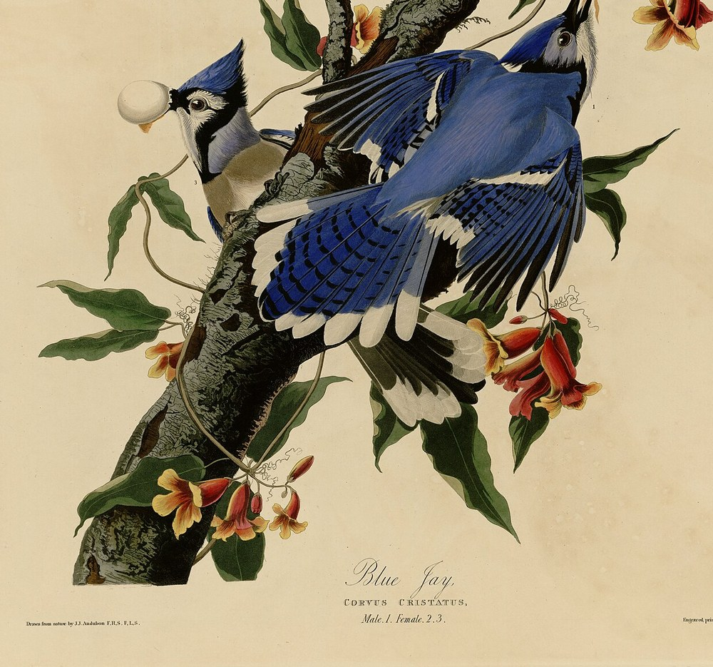
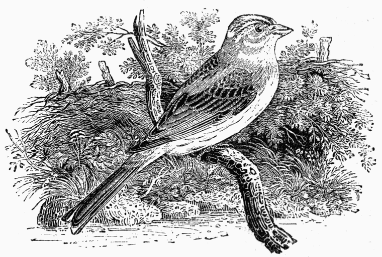
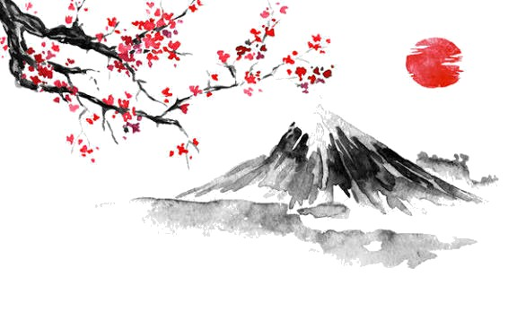
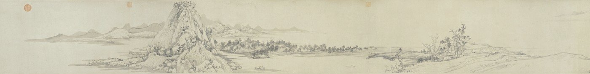
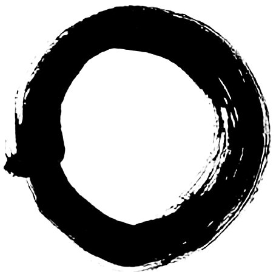
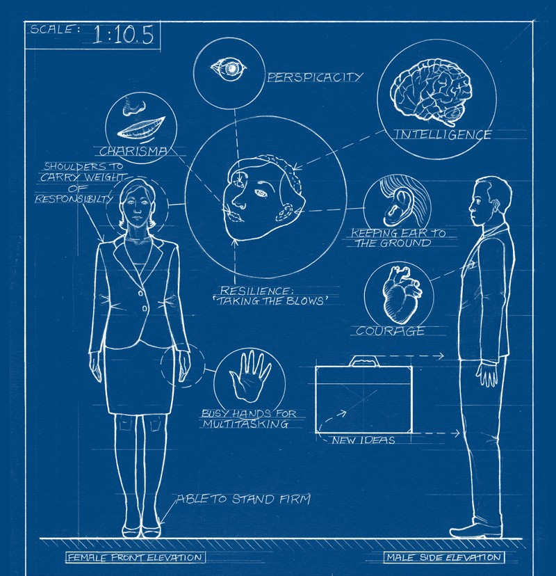

No. 001 — self observation
Show up
as yourself.
A field journal for your on-camera habits — Cue records what you do, session by session, so you can study it in your own time.

prioritizes gaze & head orientation SELECTED
learned from ~45s of your natural patterns updated today
12 min 40 s · 3 cues noted · 2 marked helpful yesterday · 18:24
Processed on your device. Nothing is uploaded; the camera turns on only when you start a session.
Try bringing your gaze back toward the camera.
Camera engagement · 12:40
What the session recorded
Observations only — no overall score, and no claim that a cue caused a change.
24 OCT · 18:24

Behavioral timeline
Select an entry to see its timestamp, the signal measured, and what the signal did afterward.
Session notes
- i.Three sustained gaze deviations were detected.
- ii.Head movement varied more during the middle of the session.
- iii.The measured gaze signal returned closer to baseline after one cue.
Was the first cue helpful?
Show up as yourself. A little better every time.
Tune how you show up. Cue measures a few signals against your own baseline, so you can adjust one at a time — the way you'd tune an instrument.
○ Camera stays off until you start. Processing is on-device; no frames leave the browser.
Try bringing your gaze back toward the camera.
Amber band = the window observed after a cue. A changed measurement is shown, never labelled as caused by the cue.
- 01Three sustained gaze deviations were detected.
- 02Head movement varied more during the middle of the session.
- 03The measured gaze signal returned closer to baseline after one cue.


Show up as yourself.
A little better every time.
A calm, grounded practice. Cue stays in the background and offers a quiet word only when it helps — a small adjustment, never a confrontation.

Prioritizes gaze and head orientation.
learned from your natural patterns
Yesterday · 3 cues · 2 marked helpful.
Processed on your device. The camera turns on only when you begin a session, and off the moment you end it.
Try bringing your gaze back toward the camera.
A cue appears, rests a moment, and fades. You never have to watch this screen.
A quiet record of the session
Observations only — no overall score, and no claim about cause.
Select a mark to see its timestamp, the signal measured, and what followed.
- 一Three sustained gaze deviations were detected.
- 二Head movement varied more during the middle of the session.
- 三The measured gaze signal returned closer to baseline after one cue.
Show up as yourself. A little better every time.
A deliberate, measurable practice. Cue draws your baseline, marks where you drift, and leaves the adjusting to you — improvement as an iterative loop of observation and adjustment.

| Ref | Parameter | Value | Note |
|---|---|---|---|
| G-1 | Goal | Camera engagement | prioritizes gaze · head orientation |
| B-1 | Baseline | Calibrated | drawn from ~45s |
| S-1 | Last session | 12:40 | 3 cues · 2 marked helpful |
↳ Processed on your device. The camera opens only when a session begins, and closes when it ends.
Try bringing your gaze back toward the camera.
Observation 001
Structure and measurable patterns only — no overall score, and no claim that a cue caused a change.
Ochre band = the window observed after a cue. The next measurement is shown, never labelled as caused by the cue.
- N-01Three sustained gaze deviations were detected.
- N-02Head movement varied more through the middle of the session.
- N-03The measured gaze signal returned closer to baseline after one cue.